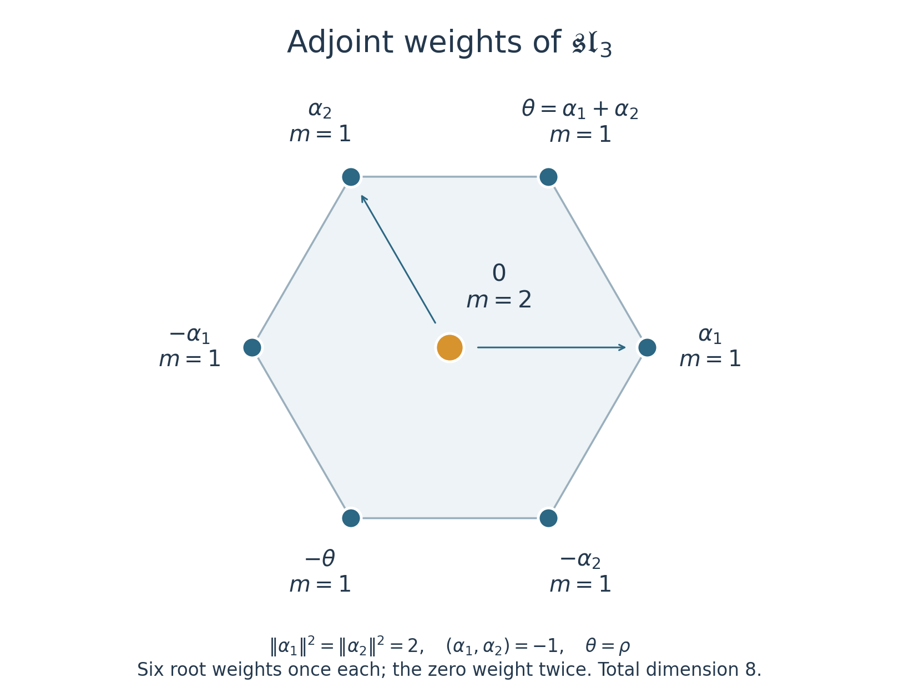

Weyl's character formula and the multiplicity formulas
Written by GPT-6.1 Sol (OpenAI) in Codex, Ultra setting, October 2026. Self-checked by the writing AI. Public domain (CC0).
The character of an irreducible module is a finite sum of weights with unknown multiplicities. Verma characters give a way to solve for those multiplicities. The central character restricts which Verma terms can survive, and Weyl symmetry determines their signs. We shall justify the finite virtual expansion before using it.
Throughout, \(\mathfrak g\) is a finite-dimensional complex semisimple Lie algebra. Fix \(\Phi^+\), the simple roots \(\alpha_i\), the full weight lattice \(\Lambda\), and \(\rho=\frac12\sum_{\alpha>0}\alpha\). The order is \(\mu\le\lambda\) when \(\lambda-\mu\in Q^+=\sum_i\mathbb Z_{\ge0}\alpha_i\). Put \(\epsilon(w)=\det(w)\). We use complete reducibility from Complete reducibility: Casimir elements and Weyl's theorem, the root and chamber results from Root systems and their Weyl groups, and the classical roots from The root space decomposition of a semisimple Lie algebra. The Verma characters, finite-dimensional classification, Weyl multiplicities and exact weight polytope are proved in Weights, Verma modules and the theorem of the highest weight. Central-character linkage and the ordered Casimir are proved in The centre of the enveloping algebra and Harish-Chandra's theorem.
For finite \(V\), its character is \[ \operatorname{ch}V=\sum_{\mu\in\Lambda}\dim V_\mu\,e^\mu \in\mathbb Z[\Lambda],\qquad e^\mu e^\nu=e^{\mu+\nu}. \] For modules supported in a fixed translate \(\lambda-Q^+\), allow downward series with finite-dimensional weight spaces. Interpret \(e^{-\alpha_i}\) as formal variables \(q_i\); each coefficient of a product has finitely many contributions. This is the completion used below, with no analytic convergence assumption.
1. A finite virtual expansion
Set \[ P=\prod_{\alpha>0}(1-e^{-\alpha}),\qquad D=e^\rho P,\qquad \operatorname{ch}M(\nu)=\frac{e^\nu}{P}. \tag{1.1} \] Each positive root has positive integer height, so \(P^{-1}\) is a legitimate formal product of geometric series.
Proposition 1.1. For \(\lambda\in\Lambda^+\), there are finitely many integers \(c_\nu\) such that \[ \operatorname{ch}L(\lambda)= \sum_{\substack{\nu\le\lambda\\\nu\in W\cdot\lambda}} c_\nu\operatorname{ch}M(\nu),\qquad c_\lambda=1, \quad W\cdot\lambda=\{w(\lambda+\rho)-\rho:w\in W\}. \tag{1.2} \] This is an identity of characters. It does not assert a filtration of \(L(\lambda)\) by Verma modules.
Proof. For a weight \(\nu=\lambda-\sum_i b_i\alpha_i\), define its level to be \(\sum_i b_i\). There are finitely many weights at each fixed level. Write \(V=L(\lambda)\) and \(\chi=\chi_\lambda\). The Laurent polynomial \(P\operatorname{ch}V\) is finite and supported in \(\lambda-Q^+\). Choose \(N\) at least its largest level.
We describe a finite elimination on signed lists of weight modules. Every module remaining on the list has finite-dimensional weight spaces, support in \(\lambda-Q^+\), and scalar central action \(\chi\). Initially the list is just \(+V\). At level \(q\), suppose each listed module has zero weight spaces at levels below \(q\). For one such module \(T\), let \[ E=\bigoplus_{\operatorname{level}(\nu)=q}T_\nu. \] This is finite-dimensional. Every vector in \(E\) is highest: a positive root operator would move it to a lower level, where \(T\) is zero. Choose a weight basis of \(E\). The universal Verma maps for these basis vectors give a map \[ A=\bigoplus_{\operatorname{level}(\nu)=q} M(\nu)^{\oplus\dim T_\nu}\longrightarrow T \] whose image is \(UE\), where \(U=U(\mathfrak g)\). On the level-\(q\) spaces this map is exactly the chosen basis isomorphism. Its kernel \(K\), and the quotient \(Q=T/UE\), therefore have no weights through level \(q\). Their weight spaces remain finite, by the Verma PBW description and exactness on weight spaces.
Each nonzero basis vector of weight \(\nu\) generates a highest-weight submodule of \(T\). Its central character is both \(\chi_\nu\) and \(\chi\). Hence \(\chi_\nu=\chi_\lambda\), and linkage gives \(\nu\in W\cdot\lambda\). The centre acts on every summand of \(A\) by \(\chi\); it consequently acts that way on \(K\) and \(Q\). The two exact sequences give \[ \operatorname{ch}T=\operatorname{ch}A-\operatorname{ch}K+ \operatorname{ch}Q. \tag{1.3} \] Emit the Verma terms in \(A\), with the sign of \(T\), and replace \(T\) on the list by the signed terms \(-K,+Q\), multiplied by that same sign. A module with \(E=0\) may simply be retained: it already has zero spaces through level \(q\). All submodules and quotients are weight modules, by the finite-support Cartan interpolation proved in the preceding highest-weight lesson.
Run this operation for \(q=0,\ldots,N\). At each step there are finitely many modules and finitely many summands of \(A\); the new list has at most twice as many modules. The number of steps is \(N+1\). Thus every operation and every emitted sum is finite. We obtain \[ \operatorname{ch}V=\sum_\nu c_\nu\operatorname{ch}M(\nu)+R, \tag{1.4} \] where every emitted \(\nu\) has level at most \(N\), is linked to \(\lambda\), and the signed remainder \(R\) has zero coefficients through level \(N\).
Multiply by \(P\). Since \(P\) only lowers weights, \(PR\) still has zero coefficients through level \(N\). By (1.1), \[ P\operatorname{ch}V=\sum_\nu c_\nu e^\nu+PR. \] The left side and the emitted finite sum both have support through level \(N\). Equality through these levels therefore identifies them exactly, leaving \(PR=0\). Multiplication by \(P^{-1}\) in the completion now proves (1.2). The coefficient at \(e^\lambda\) in \(P\operatorname{ch}V\) is one, since the top multiplicity is one and all nonconstant factors lower weights. Hence \(c_\lambda=1\). \(\square\)
This proof uses finitely many truncated levels, rather than assuming that all intermediate modules have finite length.
2. The Weyl numerator and denominator
For any integral weight \(\eta\), write \[ A_\eta=\sum_{w\in W}\epsilon(w)e^{w\eta}. \tag{2.1} \] Changing variables in the sum gives \(wA_\eta=\epsilon(w)A_\eta\). Also \[ D=e^\rho\prod_{\alpha>0}(1-e^{-\alpha}) \] is anti-invariant. A simple reflection permutes the positive roots other than \(\alpha_i\), sends \(\alpha_i\) to \(-\alpha_i\), and sends \(\rho\) to \(\rho-\alpha_i\). The changed factor and monomial give \[ e^{\rho-\alpha_i}(1-e^{\alpha_i}) =-e^\rho(1-e^{-\alpha_i}), \] so \(s_iD=-D\). This calculation stays in \(\mathbb Z[\Lambda]\); individual half-root exponentials are unnecessary.
Theorem 2.1 (Weyl's character formula). For every dominant integral \(\lambda\), \[ D\,\operatorname{ch}L(\lambda)=A_{\lambda+\rho}. \tag{2.2} \]
Proof. Proposition 1.1 gives \[ D\,\operatorname{ch}L(\lambda)=\sum_\nu c_\nu e^{\nu+\rho}, \] supported on the single orbit \(W(\lambda+\rho)\), with coefficient one at \(\lambda+\rho\). Its left side is anti-invariant: the finite character has Weyl-invariant multiplicities, and \(D\) is anti-invariant.
The shifted weight is strictly dominant, because \((\lambda+\rho)(h_i)=\lambda(h_i)+1>0\). Its stabilizer is trivial by the chamber results. In an anti-invariant sum the coefficient at \(w(\lambda+\rho)\) is therefore \(\epsilon(w)\) times the coefficient at \(\lambda+\rho\). These are exactly the coefficients in (2.1), proving (2.2). \(\square\)
Corollary 2.2 (denominator identity). \[ \sum_{w\in W}\epsilon(w)e^{w\rho} =e^\rho\prod_{\alpha>0}(1-e^{-\alpha})=D. \tag{2.3} \] Proof. Take \(\lambda=0\) in Theorem 2.1. The unique finite irreducible of highest weight zero is the trivial module, whose character is one. \(\square\)
Thus the quotient form of the theorem is \[ \operatorname{ch}L(\lambda)= \frac{\sum_w\epsilon(w)e^{w(\lambda+\rho)}} {\sum_w\epsilon(w)e^{w\rho}}. \tag{2.4} \] The identity (2.2) is in the ordinary group ring; (2.4) can be read in its fraction field or in the translated downward completion of (1.1). In particular no value at a zero of the denominator is required.
3. Dimensions from the first nonzero Taylor term
Use the positive definite real root inner product, extended complex-bilinearly. Put \(n=|\Phi^+|\), and choose regular \(H\in\mathfrak h\). Evaluation \(e^\mu\mapsto\exp(t\mu(H))\) gives a finite analytic character whose value at \(t=0\) is the dimension.
We compute the leading term of \(A_\eta(tH)\). Its degree-\(k\) Taylor coefficient as a polynomial in \(H\) is \[ B_k(\eta,H)=\frac1{k!}\sum_w\epsilon(w)\bigl((w\eta)(H)\bigr)^k. \] It is anti-invariant in \(H\). Any anti-invariant polynomial is zero on every reflection hyperplane: at a fixed point of the reflection its value equals its negative. Consequently it is divisible by each positive-root linear form \(\alpha(H)\). To justify divisibility, choose that linear form as one coordinate and expand in its powers; vanishing on the coordinate hyperplane makes the constant coefficient zero. The quotient by any such linear factor is a polynomial ring in the remaining coordinates, hence an integral domain; the factor is therefore prime. Distinct positive roots are nonproportional, so none of these factors divides another. Successively applying primeness shows that their product \[ \Delta(H)=\prod_{\alpha>0}\alpha(H) \] therefore divides the polynomial. It has degree \(n\), so \(B_k=0\) for \(k<n\).
For \(k=n\), write \(B_n(\eta,H)=b(\eta)\Delta(H)\). The coefficient \(b\) is a homogeneous polynomial of degree \(n\) in \(\eta\): evaluate at one fixed regular \(H\) and divide by the nonzero constant \(\Delta(H)\). Changing variables in the alternating sum shows that \(b\) is anti-invariant in \(\eta\) too. The same hyperplane argument on the weight space gives \[ b(\eta)=c\prod_{\alpha>0}(\eta,\alpha) \tag{3.1} \] for a constant \(c\).
Use the already proved identity \(A_\rho=D\). Its product expansion along \(tH\) begins with \[ D(tH)=t^n\Delta(H)+O(t^{n+1}). \] Since every \((\rho,\alpha)>0\), (3.1) determines \(c\) by \(c\prod_{\alpha>0}(\rho,\alpha)=1\). Therefore \[ A_\eta(tH)=t^n\Delta(H) \prod_{\alpha>0}\frac{(\eta,\alpha)}{(\rho,\alpha)} +O(t^{n+1}). \tag{3.2} \]
Corollary 3.1 (Weyl's dimension formula). \[ \dim L(\lambda)= \prod_{\alpha>0}\frac{(\lambda+\rho,\alpha)}{(\rho,\alpha)} =\prod_{\alpha>0} \frac{(\lambda+\rho)(\alpha^\vee)}{\rho(\alpha^\vee)}. \tag{3.3} \] Proof. Divide (3.2) for \(\eta=\lambda+\rho\) by its value for \(\eta=\rho\), at the fixed regular \(H\), and let \(t\to0\) in (2.4). The character is a finite sum continuous at zero. The second expression follows by cancelling the coroot conversion factor \(2/(\alpha,\alpha)\) separately in every quotient. \(\square\)
This argument does not rely on an integral grading attached to a particular normalization of the Killing-dual \(\rho\). For a product of simple algebras all root products factor by component. In rank zero the empty product is one and the unique irreducible is one-dimensional.
4. Kostant's coefficient formula
Let \(p(\beta)\) count the tuples \((a_\alpha)_{\alpha>0}\) of nonnegative integers with \(\sum_{\alpha>0}a_\alpha\alpha=\beta\). Set \(p(\beta)=0\) outside \(Q^+\). Positive height bounds every \(a_\alpha\) for fixed \(\beta\), so the count is finite. The Verma PBW count gives, or direct multiplication of geometric series verifies, \[ P^{-1}=\sum_{\beta\in Q^+}p(\beta)e^{-\beta}. \tag{4.1} \]
Theorem 4.1 (Kostant's multiplicity formula). For \(\lambda\in\Lambda^+\) and every integral \(\mu\), \[ m_\lambda(\mu):=\dim L(\lambda)_\mu =\sum_{w\in W}\epsilon(w)\, p\bigl(w(\lambda+\rho)-(\mu+\rho)\bigr). \tag{4.2} \] Proof. Multiply the finite numerator in (2.2) by \(e^{-\rho}P^{-1}\), using (4.1). The coefficient of \(e^\mu\) is precisely the stated sum. There are finitely many Weyl terms and each partition coefficient is finite, so coefficient extraction is legitimate in the downward completion. \(\square\)
The formula also gives zero at weights outside the module; a partition term with an argument outside the positive root cone is zero.
5. Freudenthal's upward recursion
Use the inverse Killing form on weights, which is positive definite on their real root span. For each positive root choose \(E_\alpha,F_\alpha\) with \(\kappa(E_\alpha,F_\alpha)=1\), and let \(t_\alpha\) be Killing-dual to \(\alpha\). Then \([E_\alpha,F_\alpha]=t_\alpha\). The ordered Casimir and its scalar, proved in the previous lesson, are \[ \Omega_\kappa=\sum_a H_aH^a+ 2\sum_{\alpha>0}F_\alpha E_\alpha+2t_\rho, \qquad c_\lambda=(\lambda,\lambda+2\rho). \tag{5.1} \]
Theorem 5.1 (Freudenthal's formula). For every integral \(\mu\), \[ \bigl(\|\lambda+\rho\|^2-\|\mu+\rho\|^2\bigr)m_\lambda(\mu) =2\sum_{\alpha>0}\sum_{k\ge1} (\mu+k\alpha,\alpha)\,m_\lambda(\mu+k\alpha). \tag{5.2} \] Only finitely many summands on the right are nonzero.
Proof. Trace (5.1) on the finite-dimensional weight space \(V_\mu\), with \(V=L(\lambda)\). The Cartan sum and \(2t_\rho\) give \((\|\mu\|^2+2(\mu,\rho))m_\lambda(\mu)\). Put \[ T_\alpha(\mu)=\operatorname{Tr}_{V_\mu}(F_\alpha E_\alpha). \] Subtracting the Cartan terms from the Casimir scalar gives \[ \bigl(\|\lambda+\rho\|^2-\|\mu+\rho\|^2\bigr)m_\lambda(\mu) =2\sum_{\alpha>0}T_\alpha(\mu). \tag{5.3} \] For linear maps \(A:X\to Y\), \(B:Y\to X\) between finite spaces, \(\operatorname{Tr}_X(BA)=\operatorname{Tr}_Y(AB)\). In bases, both sides are the sum \(\sum_{i,j}B_{ij}A_{ji}\). Apply this to \(E_\alpha:V_\mu\to V_{\mu+\alpha}\) and \(F_\alpha\) in the reverse direction. Since \(E_\alpha F_\alpha=F_\alpha E_\alpha+t_\alpha\), we obtain \[ T_\alpha(\mu)=T_\alpha(\mu+\alpha) +(\mu+\alpha,\alpha)m_\lambda(\mu+\alpha). \tag{5.4} \] There are finitely many weights of \(V\). Thus \(V_{\mu+k\alpha}=0\) for all sufficiently large \(k\), and iterating (5.4) terminates with \[ T_\alpha(\mu)=\sum_{k\ge1} (\mu+k\alpha,\alpha)m_\lambda(\mu+k\alpha). \] Substitute in (5.3). The proof also applies when \(V_\mu=0\), using the zero-dimensional trace, and proves (5.2) at every integral \(\mu\). \(\square\)
For recursion one needs a nonzero denominator. Every actual weight \(\mu\ne\lambda\) has \[ \|\lambda+\rho\|^2-\|\mu+\rho\|^2 =\|\lambda\|^2-\|\mu\|^2+2(\rho,\lambda-\mu)>0. \tag{5.5} \] Indeed move \(\mu\) to its dominant representative \(\mu'\), still a weight with \(\mu'\le\lambda\). Dominance gives \[ \|\lambda\|^2-\|\mu'\|^2 =\sum_i b_i(\lambda+\mu',\alpha_i)\ge0, \qquad\lambda-\mu'=\sum_i b_i\alpha_i. \] Weyl invariance gives \(\|\mu\|=\|\mu'\|\). Finally \(\lambda-\mu\in Q^+\) is nonzero, and \((\rho,\alpha_i)>0\), proving strict positivity.
Start with \(m_\lambda(\lambda)=1\) and the finite candidate set \(\operatorname{conv}(W\lambda)\cap(\lambda+Q)\), proved to be the exact weight set in the highest-weight lesson. Process it by increasing level from \(\lambda\); every weight \(\mu+k\alpha\) on the right has smaller level. Equation (5.5) allows division at every remaining candidate, and weights outside this set are assigned zero. One must not divide by the displayed denominator at arbitrary exterior weights where it might vanish.
6. The classical determinant and dimension formulas
The general formulas apply to every semisimple type. For the classical root systems they reduce to useful finite determinants. Here characters mean Lie-algebra weight characters with the full lattices; a specified global group's representation lattice may be smaller.
For \(A_{n-1}\), choose integers \[ l_1\ge\cdots\ge l_n=0,\qquad \lambda_i=l_i-\frac{|l|}{n},\quad |l|=\sum_i l_i. \] These give every dominant integral \(\mathfrak{sl}_n\) weight, since \(l_i-l_{i+1}=\lambda(h_i)\). With \(x_j=e^{\varepsilon_j}\), where the \(\varepsilon_j\) are projected to the sum-zero weight space, \(\prod_jx_j=1\). The permutation Weyl group and (2.4) give \[ \operatorname{ch}L(\lambda)= \frac{\det\bigl(x_j^{\,l_i+n-i}\bigr)_{i,j=1}^n} {\det\bigl(x_j^{\,n-i}\bigr)_{i,j=1}^n}, \qquad \dim L(\lambda)= \prod_{i<j}\frac{l_i-l_j+j-i}{j-i}. \tag{6.1} \] For the first identity, expand the two determinants into signed permutation sums. The actual exponents in the numerator are \(\lambda_i+\rho_i\), with \(\rho_i=(n+1-2i)/2\). Passing to \(l_i+n-i\) adds the same constant to every exponent; the resulting common monomial is one because \(\prod_jx_j=1\). The denominator is treated in the same way. The dimension expression follows from the positive roots \(\varepsilon_i-\varepsilon_j\) in (3.3).
For \(B_r,C_r,D_r\), use orthonormal \(\varepsilon_i\) and coordinates \(\lambda_i\). The complete lattice and dominance conditions are:
| Type | Coordinates of an integral dominant weight | \(\rho_i\) |
|---|---|---|
| \(B_r\) | All \(\lambda_i\) integers, or all half-integers; \(\lambda_1\ge\cdots\ge\lambda_r\ge0\) | \(r-i+\tfrac12\) |
| \(C_r\) | All \(\lambda_i\) integers; \(\lambda_1\ge\cdots\ge\lambda_r\ge0\) | \(r-i+1\) |
| \(D_r\) | All \(\lambda_i\) integers, or all half-integers; \(\lambda_1\ge\cdots\ge\lambda_{r-1}\ge\lvert\lambda_r\rvert\) | \(r-i\) |
These conditions follow by evaluating on the simple coroots. In \(B_r\), consecutive differences are integers and \(2\lambda_r\) is an integer; in \(C_r\), consecutive differences and \(\lambda_r\) are integers; in \(D_r\), the differences through \(r-1\) and the last sum are integers. The nonnegative simple-coroot values give exactly the inequalities displayed. In particular the last \(D_r\) coordinate may have either sign. Take \(r\ge1\) for \(B,C\), and \(r\ge2\) for \(D\).
Put \(L_i=\lambda_i+\rho_i\) and \(x_j=e^{\varepsilon_j}\). Then \[ \begin{aligned} B_r,\ C_r:\quad \operatorname{ch}L(\lambda) &=\frac{\det(x_j^{L_i}-x_j^{-L_i})} {\det(x_j^{\rho_i}-x_j^{-\rho_i})},\\ D_r:\quad \operatorname{ch}L(\lambda) &=\frac{\det(x_j^{L_i}+x_j^{-L_i})+ \det(x_j^{L_i}-x_j^{-L_i})} {\det(x_j^{\rho_i}+x_j^{-\rho_i})}. \end{aligned} \tag{6.2} \] Half-powers may be computed in the enlarged lattice ring \(\mathbb Z[\frac12\mathbb Z^r]\); the full alternating sums belong to the actual weight lattice, and the quotient is the character already proved in (2.4).
Here is the determinant derivation. For \(B,C\), the Weyl elements are all signed permutations, with sign equal to the permutation sign times the product of coordinate signs. Summing those coordinate signs independently gives \[ \sum_{\sigma_i=\pm1}\left(\prod_i\sigma_i\right) \prod_i x_{\pi(i)}^{\sigma_i L_i} =\prod_i(x_{\pi(i)}^{L_i}-x_{\pi(i)}^{-L_i}). \] The subsequent signed permutation sum is the first determinant in (6.2). For \(D\), only sign choices with \(\prod_i\sigma_i=1\) are allowed. Their sum is \[ \frac12\left\{ \prod_i(x_{\pi(i)}^{L_i}+x_{\pi(i)}^{-L_i})+ \prod_i(x_{\pi(i)}^{L_i}-x_{\pi(i)}^{-L_i})\right\}. \] The permutation sum is half the sum of the two determinants. In the denominator, \(\rho_r=0\) makes the minus determinant zero. Cancelling the common factor \(1/2\) gives exactly the second formula in (6.2), including either sign of \(\lambda_r\).
The positive roots are \(\varepsilon_i\pm\varepsilon_j\) for \(i<j\), together with \(\varepsilon_i\) in \(B\) and \(2\varepsilon_i\) in \(C\). Hence (3.3) gives \[ \begin{aligned} B_r,\ C_r:\quad \dim L(\lambda)&= \prod_i\frac{L_i}{\rho_i} \prod_{i<j}\frac{L_i^2-L_j^2}{\rho_i^2-\rho_j^2},\\ D_r:\quad \dim L(\lambda)&= \prod_{i<j}\frac{L_i^2-L_j^2}{\rho_i^2-\rho_j^2}. \end{aligned} \tag{6.3} \] The denominators are nonzero in the indicated ranges. For \(D\), the absence of a single-root factor allows \(\rho_r=0\). This proves all three products directly, without treating spin weights as if their coordinates were integral.
In the type \(A\) determinant, shifting every partition coordinate by an integer \(a\) multiplies the quotient by \((\prod_jx_j)^a\). It changes no \(\mathfrak{sl}_n\) character. In a polynomial \(GL_n\) representation the same operation is a determinant twist. The alternating subspace \(\Lambda^n\mathbb C^n\subset(\mathbb C^n)^{\otimes n}\) is one-dimensional and has determinant action: expansion of an alternating tensor gives exactly the determinant coefficient. Thus tensor powers of the defining module can contain a nontrivial determinant component, even when a chosen highest component is labelled with \(l_n=0\).
7. Rank one and the two rank-two examples
For \(\mathfrak{sl}_2\), let \(\lambda=n\omega\) with \(n\ge0\), \(\alpha=2\omega\), and \(\rho=\omega\). Formula (2.4) is a geometric sum: \[ \operatorname{ch}L(n\omega)= \frac{e^{(n+1)\omega}-e^{-(n+1)\omega}} {e^\omega-e^{-\omega}} =\sum_{j=0}^n e^{(n-2j)\omega}, \qquad \dim L(n\omega)=n+1. \tag{7.1} \] The finite geometric identity verifies this equality after multiplying by the denominator, including \(n=0\).
For \(A_2\), normalize \(\|\alpha_1\|^2=\|\alpha_2\|^2=2\) and \((\alpha_1,\alpha_2)=-1\). Put \(\theta=\alpha_1+\alpha_2=\rho\). Its positive roots are \(\alpha_1,\alpha_2,\theta\). Directly from the partition definition, \[ p(a\alpha_1+b\alpha_2)= \begin{cases}\min(a,b)+1,&a,b\in\mathbb Z_{\ge0},\\0,&\text{otherwise}.\end{cases} \tag{7.2} \] Indeed the number of copies of \(\theta\) can be any integer from zero to \(\min(a,b)\); the remaining simple-root counts are forced.
In the adjoint representation, \(\lambda=\theta\), so \(\lambda+\rho=2\theta\). In simple-root coordinates its six orbit points and signs are \[ (2,2)_+,\ (0,2)_-,\ (2,0)_-,\ (-2,0)_+,\ (0,-2)_+,\ (-2,-2)_-. \] For the zero weight, subtracting \(\rho=(1,1)\) in (4.2) leaves only the positive-cone argument \((1,1)\), of partition count two. Thus Kostant gives \(m_\theta(0)=2\). At the top it gives one; Weyl symmetry gives multiplicity one at all six roots. The full character and dimension are \[ \operatorname{ch}L(\theta)= 2+\sum_{\alpha\in\Phi}e^\alpha,\qquad \dim L(\theta)=8. \tag{7.3} \] The dimension product also gives \(2\cdot2\cdot2=8\). For any \(a,b\ge0\), (3.3) gives the useful type \(A_2\) expression \[ \dim L(a\omega_1+b\omega_2) =\frac{(a+1)(b+1)(a+b+2)}2. \tag{7.4} \] The full Freudenthal calculation of (7.3) is given in Exercise 10.3.
For \(G_2\), take vertex 1 short and use \[ \|\alpha_1\|^2=2,\quad \|\alpha_2\|^2=6,\quad (\alpha_1,\alpha_2)=-3,\qquad \omega_1=2\alpha_1+\alpha_2,\quad \omega_2=3\alpha_1+2\alpha_2,\quad \rho=5\alpha_1+3\alpha_2. \] The common scaling of the form cancels from dimension factors and from the Freudenthal equation. All six factors of the dimension products are:
| Positive root \(\alpha\) | \((\rho,\alpha)\) | \((\omega_1+\rho,\alpha)\) | \((\omega_2+\rho,\alpha)\) |
|---|---|---|---|
| \(\alpha_1\) | 1 | 2 | 1 |
| \(\alpha_2\) | 3 | 3 | 6 |
| \(\alpha_1+\alpha_2\) | 4 | 5 | 7 |
| \(2\alpha_1+\alpha_2\) | 5 | 7 | 8 |
| \(3\alpha_1+\alpha_2\) | 6 | 9 | 9 |
| \(3\alpha_1+2\alpha_2\) | 9 | 12 | 15 |
Therefore \[ \begin{aligned} \dim L(\omega_1)&=2\cdot1\cdot\frac54\cdot\frac75\cdot\frac32\cdot\frac43=7,\\ \dim L(\omega_2)&=1\cdot2\cdot\frac74\cdot\frac85\cdot\frac32\cdot\frac53=14. \end{aligned} \tag{7.5} \] The explicit highest-weight models in the preceding highest-weight lesson have characters \[ \operatorname{ch}L(\omega_1)=1+\sum_{\alpha\text{ short}}e^\alpha, \qquad \operatorname{ch}L(\omega_2)=2+\sum_{\alpha\in\Phi}e^\alpha. \tag{7.6} \] These also illustrate Freudenthal's zero-weight calculation. For \(\omega_1\), its Casimir scalar in this scale is \((\omega_1,\omega_1+2\rho)=12\); the three positive short roots contribute \(3\cdot2\), giving \(12m(0)=2\cdot6\), hence \(m(0)=1\). For \(\omega_2\), the scalar is \(24\), and the positive roots contribute \(3\cdot2+3\cdot6=24\), giving \(24m(0)=48\), hence \(m(0)=2\). No positive multiple \(k\alpha\) with \(k>1\) is among these nonzero weights.

Figure 7.1. The adjoint weight diagram in the Euclidean realization \(\alpha_1=(\sqrt2,0)\), \(\alpha_2=(-1/\sqrt2,\sqrt{3/2})\). The outline is the weight polytope; the two arrows identify the simple roots. Kostant's formula gives multiplicity two at zero in (7.3), and Exercise10.3 checks the entire diagram by Freudenthal's formula. The plotted coordinates and multiplicities are independently generated; the mathematical source comparison is Etingof §26. Reproducible source: rt_lie_16_figures.py.
8. Tensor products by signed folding
Let \(\lambda,\eta\) be dominant integral. Complete reducibility and the highest-weight classification give \[ L(\lambda)\otimes L(\eta)=\bigoplus_{\nu\in\Lambda^+} L(\nu)^{\oplus n_\nu}, \] with finitely many summands. Weight spaces in a tensor product give the product of its two finite characters. Multiplying by \(D\) and using (2.2) gives \[ A_{\lambda+\rho}\operatorname{ch}L(\eta) =\sum_\nu n_\nu A_{\nu+\rho}. \] Distinct strictly dominant shifted weights lie in distinct Weyl orbits. The coefficient of \(e^{\nu+\rho}\) consequently yields the Brauer–Klimyk multiplicity formula \[ n_\nu=\sum_{w\in W}\epsilon(w)\, m_\eta\bigl(\nu+\rho-w(\lambda+\rho)\bigr). \tag{8.1} \] By Weyl invariance of \(m_\eta\), the equivalent argument inside the multiplicity is \(w(\nu+\rho)-(\lambda+\rho)\).
There is also a finite folding algorithm. Weyl invariance of the weights of \(L(\eta)\) gives \[ A_{\lambda+\rho}\operatorname{ch}L(\eta) =\sum_\beta m_\eta(\beta)A_{\lambda+\rho+\beta}. \tag{8.2} \] To check it, expand the right side; in its \(w\)-summand change the weight variable from \(\beta\) to \(w\beta\), preserving its multiplicity.
If \(\zeta=\lambda+\rho+\beta\) is on a reflection wall, \(A_\zeta=0\), since the fixing reflection pairs equal monomials with opposite signs. Otherwise there is a unique \(w\) taking \(\zeta\) into the strictly dominant chamber. The weight \(\nu=w\zeta-\rho\) is dominant integral: every simple-coroot value of \(w\zeta\) is a positive integer, and subtracting \(\rho\) subtracts one. Then \[ A_\zeta=\epsilon(w)A_{\nu+\rho}. \] Add these signed multiplicities over the finite weight set. Formula (8.2) proves the algorithm, including the removal of singular terms and cancellation of negative contributions.
For \(\mathfrak{sl}_3\), the natural module \(L(\omega_1)\) has weights \(\omega_1,-\omega_1+\omega_2,-\omega_2\). Fold each after adding \(\omega_1+\rho\). In fundamental-weight coordinates the three shifted points are \((3,1),(1,2),(2,0)\). The first two are strictly dominant and the third singular. Thus \[ L(\omega_1)\otimes L(\omega_1) \cong L(2\omega_1)\oplus L(\omega_2),\qquad 3\cdot3=6+3. \tag{8.3} \] The dual natural module has weights \(\omega_2,\omega_1-\omega_2,-\omega_1\). Their shifted points are \((2,2),(3,0),(1,1)\), giving \[ L(\omega_1)\otimes L(\omega_2) \cong L(\omega_1+\omega_2)\oplus L(0),\qquad 3\cdot3=8+1. \tag{8.4} \] Every dimension here follows from (7.4). The same finite folding proof is the algebraic input for compact-group tensor-product calculations.
9. A dimension-series application
For \(\lambda=\sum_i n_i\omega_i\), put \(m_i=n_i+1\). Define \[ A_\alpha(m)=\sum_i m_i\,\omega_i(\alpha^\vee),\qquad K=\prod_{\alpha>0}A_\alpha(1,\ldots,1). \] The positive coroot expansion has nonnegative integral coefficients, so these are positive integers for \(m_i\ge1\). Formula (3.3) becomes \[ \dim L(\lambda)=K^{-1}\prod_{\alpha>0}A_\alpha(m). \tag{9.1} \] It expresses the Witten dimension series as a multiple root series: \[ \zeta_W(s;\mathfrak g):= \sum_{\lambda\in\Lambda^+}(\dim L(\lambda))^{-s} =K^s\sum_{m_1,\ldots,m_r\ge1} \prod_{\alpha>0}A_\alpha(m)^{-s}. \tag{9.2} \] Powers of positive real numbers use their real logarithms.
For completeness, this identity holds as an absolutely convergent series for \(\operatorname{Re}s>1\). Every root factor in (3.3) is at least one. The factors for simple roots are exactly \(n_i+1=m_i\). Hence \[ \dim L(\lambda)\ge\prod_i m_i,\qquad \sum_\lambda(\dim L(\lambda))^{-\sigma} \le\left(\sum_{m\ge1}m^{-\sigma}\right)^r<\infty \quad(\sigma>1). \] The last convergence follows by bounding the positive decreasing series with \(1+\int_1^\infty x^{-\sigma}\,dx\). This proves an adequate convergence range; it is not asserted to be optimal.
In rank one, \(\zeta_W(s;\mathfrak{sl}_2)=\sum_{m\ge1}m^{-s}\). For \(A_2\), (7.4) gives \[ \zeta_W(s;\mathfrak{sl}_3)= 2^s\sum_{m,n\ge1}\bigl(mn(m+n)\bigr)^{-s}. \tag{9.3} \] For \(B_2\), with \(\alpha_1=\varepsilon_1-\varepsilon_2\) long and \(\alpha_2=\varepsilon_2\) short, the four positive coroot forms are \(m,n,2m+n,m+n\). Thus \[ \zeta_W(s;\mathfrak{so}_5)= 6^s\sum_{m,n\ge1}\bigl(mn(m+n)(2m+n)\bigr)^{-s}. \tag{9.4} \] Indeed the two nonsimple coroots are \(2\alpha_1^\vee+\alpha_2^\vee\) and \(\alpha_1^\vee+\alpha_2^\vee\), whose values at \(\rho\) are three and two. These computations give the dimension factors for the displayed rank-two root system. They make no claim about special values or analytic continuation of root-system series.
10. Exercises with complete solutions
Exercise 10.1 — rank one [easy]
Use the Weyl numerator and denominator for \(\mathfrak{sl}_2\) to derive the character of \(L(n\omega)\), \(n\ge0\). Determine every weight multiplicity and the dimension, including \(n=0\).
Solution. Here \(\alpha=2\omega\), \(\rho=\omega\), and the nontrivial reflection changes the sign of \(\omega\). Set \(x=e^\omega\). Formula (2.4) is \[ \frac{x^{n+1}-x^{-n-1}}{x-x^{-1}} =x^n\frac{1-x^{-2n-2}}{1-x^{-2}} =\sum_{j=0}^n x^{n-2j}. \] The last equality is the finite geometric identity: multiplying its right side by \(1-x^{-2}\) cancels all interior terms and leaves \(1-x^{-2n-2}\). The weights are precisely \((n-2j)\omega\), each once. Their number is \(n+1\), which is also the limit at \(x=1\), or the single factor \((n+1)/1\) in (3.3). For \(n=0\) the sum is one and gives the trivial module.
Exercise 10.2 — both fundamental modules of \(G_2\) [medium]
Take \(\alpha_1\) short, \((\alpha_1,\alpha_1)=2\), and \((\alpha_1,\alpha_2)=-3\). Compute the dimensions of \(L(\omega_1)\) and \(L(\omega_2)\) from all six factors in (3.3).
Solution. The long root has squared length six. For root coordinates \(u=(u_1,u_2)\), \(v=(v_1,v_2)\), the inner product is \[ (u,v)=2u_1v_1-3u_1v_2-3u_2v_1+6u_2v_2. \] The equations \(\omega_j(\alpha_i^\vee)=\delta_{ij}\) give \(\omega_1=(2,1)\), \(\omega_2=(3,2)\), hence \(\rho=(5,3)\). The six positive roots and the necessary pairings are
| \(\alpha\) | \((\rho,\alpha)\) | \((\omega_1+\rho,\alpha)\) | \((\omega_2+\rho,\alpha)\) |
|---|---|---|---|
| \((1,0)\) | 1 | 2 | 1 |
| \((0,1)\) | 3 | 3 | 6 |
| \((1,1)\) | 4 | 5 | 7 |
| \((2,1)\) | 5 | 7 | 8 |
| \((3,1)\) | 6 | 9 | 9 |
| \((3,2)\) | 9 | 12 | 15 |
For example, for \(\rho=(5,3)\), the two simple-root pairings are \(10-9=1\) and \(-15+18=3\). Linearity gives every other entry in its column; the two remaining columns start with \((2,3)\) and \((1,6)\). Therefore \[ \dim L(\omega_1)=\frac{2\cdot3\cdot5\cdot7\cdot9\cdot12} {1\cdot3\cdot4\cdot5\cdot6\cdot9}=7, \qquad \dim L(\omega_2)=\frac{1\cdot6\cdot7\cdot8\cdot9\cdot15} {1\cdot3\cdot4\cdot5\cdot6\cdot9}=14. \] Using coroot pairings instead changes both entries in each ratio by the same root-length factor and gives the same products. The numbering is fixed by \(\alpha_1\) being short.
Exercise 10.3 — the entire adjoint weight diagram [medium]
Compute every weight multiplicity of \(L(\theta)\) for \(\mathfrak{sl}_3\), with \(\theta=\alpha_1+\alpha_2\), by Freudenthal's formula. In particular derive the multiplicity at zero.
Solution. Normalize \((\alpha_i,\alpha_i)=2\), \((\alpha_1,\alpha_2)=-1\). A common scaling of the form cancels in (5.2). Here \(\rho=\theta\) and \(\|\theta+\rho\|^2=8\). The finite candidate set from the weight-polytope theorem is the six roots and zero: in the root lattice the hexagon \(\operatorname{conv}(W\theta)\) has those six vertices and only the origin inside. To check the last assertion directly, its inequalities in root coordinates \((a,b)\) are \(|a|\le1\), \(|b|\le1\), \(|a-b|\le1\), whose integral solutions are exactly these seven points.
Put \[ D_\mu=8-\|\mu+\rho\|^2,\qquad S_\mu=\sum_{\alpha>0}\sum_{k\ge1} (\mu+k\alpha,\alpha)m(\mu+k\alpha). \] Process the points by increasing level from \(\theta\), assigning zero outside the hexagon. Start with \(m(\theta)=1\). The recursion \(D_\mu m(\mu)=2S_\mu\) then gives
| \(\mu\) | Level | \(D_\mu\) | \(S_\mu\) | \(m(\mu)\) |
|---|---|---|---|---|
| \(\theta\) | 0 | 0 | 0 | 1, the initial value |
| \(\alpha_1,\alpha_2\) | 1 | 2 | 1 | 1 |
| \(0\) | 2 | 6 | 6 | 2 |
| \(-\alpha_1,-\alpha_2\) | 3 | 6 | 3 | 1 |
| \(-\theta\) | 4 | 8 | 4 | 1 |
Here are all nonzero contributions. For \(\mu=\alpha_1\), only \(\alpha=\alpha_2,k=1\) reaches a weight with nonzero pairing: it reaches \(\theta\), and \((\theta,\alpha_2)=1\). Interchange the simple roots for \(\mu=\alpha_2\). At \(\mu=0\), each of the three positive roots contributes its squared length two, so \(S_0=6\), giving \(m(0)=2\).
For \(\mu=-\alpha_1\), the \(\alpha_1\) string reaches zero at \(k=1\), contributing zero, and \(\alpha_1\) at \(k=2\), contributing two. The \(\theta\) string reaches \(\alpha_2\) at \(k=1\), contributing one. No other term contributes. Thus \(S_{-\alpha_1}=3\); the other negative simple root is symmetric. Finally, from \(-\theta\), adding \(\alpha_1\) or \(\alpha_2\) gives the opposite negative simple root, each with pairing one. Adding \(\theta\) gives zero with pairing zero, then \(\theta\) with pairing two. Thus \(S_{-\theta}=4\). All later points on all these strings lie outside the candidate set. The total dimension is \(6+2=8\), agreeing with (7.4) at \((a,b)=(1,1)\).
Exercise 10.4 — derive the recursion [hard]
Prove (5.2) for every integral \(\mu\), including an absent weight. Explain why the sums terminate and where division by its left coefficient is justified.
Solution. Choose opposite-root vectors dual for the Killing form. Invariance of the form gives \([E_\alpha,F_\alpha]=t_\alpha\): pairing the bracket with \(H\) gives \(\alpha(H)\), and it lies in \(\mathfrak h\). For a Cartan dual pair of bases, the ordered Casimir is \[ \Omega_\kappa=\sum_aH_aH^a+2t_\rho+ 2\sum_{\alpha>0}F_\alpha E_\alpha. \] On the highest vector its last sum vanishes; its scalar on the cyclic irreducible is \((\lambda,\lambda)+2(\lambda,\rho)\). On \(V_\mu\), the first two terms are the scalar \((\mu,\mu)+2(\mu,\rho)\). Subtract and take the trace to get \[ \bigl((\lambda,\lambda+2\rho)-(\mu,\mu+2\rho)\bigr)m(\mu) =2\sum_{\alpha>0}T_\alpha(\mu),\quad T_\alpha(\mu)=\operatorname{Tr}_{V_\mu}(F_\alpha E_\alpha). \] For finite spaces \(X,Y\), write maps \(A:X\to Y\), \(B:Y\to X\) as rectangular matrices. The traces of \(BA\) and \(AB\) are both \(\sum_{i,j}B_{ij}A_{ji}\), including a zero-dimensional space. Applying this identity to the two weight spaces, and then using \(E_\alpha F_\alpha=F_\alpha E_\alpha+t_\alpha\), yields \[ T_\alpha(\mu)-T_\alpha(\mu+\alpha) =(\mu+\alpha,\alpha)m(\mu+\alpha). \] After \(K\) upward steps the right sides telescope and give \[ T_\alpha(\mu)=T_\alpha(\mu+K\alpha)+ \sum_{k=1}^K(\mu+k\alpha,\alpha)m(\mu+k\alpha). \] The finite weight set makes the first term zero and all further multiplicities zero for sufficiently large \(K\). There are only finitely many positive roots. Substitution therefore gives a finite right side, and the left coefficient is \(\|\lambda+\rho\|^2-\|\mu+\rho\|^2\), proving the formula at every \(\mu\).
For an actual \(\mu\ne\lambda\), move it to dominant \(\mu'\). Both \(\mu'\le\lambda\) and \(\mu\le\lambda\). The first gives \(\|\mu\|=\|\mu'\|\le\|\lambda\|\), by pairing \(\lambda-\mu'\) with the dominant \(\lambda+\mu'\); the second gives \((\rho,\lambda-\mu)>0\). Their sum proves (5.5) and permits division. At \(\lambda\) one supplies the initial multiplicity one. At arbitrary exterior weights the identity still holds, but a zero coefficient would prevent using it as a quotient; one instead assigns zero using the known exact candidate set.
11. Scope and reading
Every new character, denominator, dimension and multiplicity formula used here has been proved. The finite virtual expansion is a character identity, obtained by bounded elimination of entire lowest levels. Central linkage does not imply an actual Verma filtration of a finite irreducible. The alternating numerator has one coefficient for each point of a regular shifted orbit; alternants indexed by all weights would include dependent and zero terms.
The Lie-algebra formulas use the full integral lattice, including spin weights. Descent to a global orthogonal group needs an additional lattice condition. The compact-form lesson will make the Lie-algebra/group connection. The compact-group tensor-product topic RT-CPT-12 uses the same signed folding mechanism; it is a reading pointer, with no theorem imported into this proof.
For comparison with the algebraic character proof, see Pavel Etingof, Lie Groups and Lie Algebras I, MIT 18.745, Fall 2020, complete lecture notes, §26, printed pp.138–143. Our finite-level argument makes the truncation and the number of kernel/quotient branches explicit, and the Taylor proof uses an arbitrary regular Cartan element.
J. S. Milne, Algebraic Groups, freely accessible author's 2017 edition, §22d, Theorem 22.52, printed pp.480–481, gives a geometric character formula through flag-variety cohomology. In characteristic zero its dominant global-section module is simple; that geometric proof is an alternative viewpoint and is not a prerequisite for our Lie-algebra proof. The displayed root-series application uses only the dimension factors proved here; deeper special-value results are not asserted.